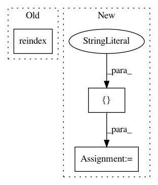

07d2442c2bfe4521b6e88bb63dc484efac9a53e4,cnvlib/tabio/genepred.py,,read_refflat,#Any#Any#Any#,80
Before Change
dframe = (dframe.groupby(by=["chromosome", "strand", "gene"],
as_index=False, group_keys=False, sort=False)
.apply(_merge_overlapping))
return dframe.reindex()
def _merge_overlapping(dframe):
Merge overlapping regions within a group.
After Change
"exon_count", "exon_starts", "exon_ends"]
elif cds:
// Use CDS instead of transcription region
cols_rest = ["_start_tx", "_end_tx",
"start", "end",
"_exon_count", "_exon_starts", "_exon_ends"]
else:
cols_rest = ["start", "end",
"_start_cds", "_end_cds",
"_exon_count", "_exon_starts", "_exon_ends"]
colnames = cols_shared + cols_rest
usecols = [c for c in colnames if not c.startswith("_")]
// Parse the file contents
try:
dframe = pd.read_table(infile, header=None,
In pattern: SUPERPATTERN
Frequency: 3
Non-data size: 3
Instances
Project Name: etal/cnvkit
Commit Name: 07d2442c2bfe4521b6e88bb63dc484efac9a53e4
Time: 2016-10-25
Author: eric.talevich@gmail.com
File Name: cnvlib/tabio/genepred.py
Class Name:
Method Name: read_refflat
Project Name: etal/cnvkit
Commit Name: 98f615864e32057dd5b0bf80506e54857ba2a869
Time: 2016-09-12
Author: eric.talevich@gmail.com
File Name: cnvlib/tabio/seg.py
Class Name:
Method Name: parse_seg
Project Name: etal/cnvkit
Commit Name: 7c03f6dd8be4ee7de7f4a120984db889fafe9c28
Time: 2016-05-19
Author: eric.talevich@gmail.com
File Name: cnvlib/commands.py
Class Name:
Method Name: do_gainloss